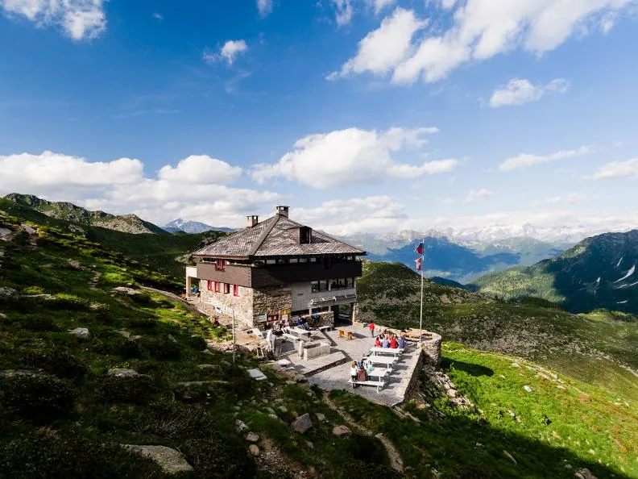
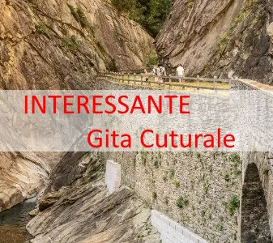

20-21 settembre / gita culturale

Le Sezioni del CAS BELLINZONA E VALLI, CAS LOCARNO, CAS TICINO e la Federazione Alpinistica
Ticinese (FAT) propongono per il 20 e 21 settembre 2025 un fine settimana tra CULTURA e
MONTAGNA al COLLE DELLA GEMMI sopra Leukerbad. Infatti è stata allestita, grazie al sostegno
del Club Alpino Svizzero, un esposizione con ben 13 installazioni di Artisti Svizzeri.
Weitere Meldungen
Alle News
Sab 13 settembre – Vivi il tuo Ticino Escursione nella Valle della Piumogna
Vivi il tuo Ticino, in collaborazione con CAS Ticino e Mountain Muses (Pierre Crivelli), organizza, sabato 13 settembre 2025, un’escursione nella regione della Valle della Piumogna. La giornata ha come scopo quello di…

Sabato 4 ottobre – Gita culturale al Dazio Grande
Sabato 4 ottobre proponiamo una visita alla mostra Après lift, versante sud. La mostra si prefigge di indagare il turismo invernale al sud delle Alpi e i suoi risvolti ambientali, sociali ed economici. Autori Nicola…

Importante – Annullata la festa – Capanna Adula 100+1 dom. 31 agosto
Comunicato importante riguardo i festeggismenti per i 100+1 anni capanna Adula. Con grande dispiacere per cause di forza maggiore ci vediamo costretti a comunicarvi che domenica 31 agosto la festa non avrà luogo…